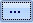

Start Eclipse Admin and log in as an administrator.
On the Case Management ribbon, select Import > Import OCR.
Select the needed managing client and case.
Select the Page Based or Document Based option, depending on the contents of your text files:
-
Page-based: Select this option if one text file exists for each page. For each page, text will be appended and added to the document's EXTRACTEDTEXT field. The system checks the text files to determine which files go with which document based on the image key. As soon as all text is found for the document, the system applies the text to the EXTRACTEDTEXT field and saves it to the database. The system then looks for text files for the next document.
-
Document-based: Select this option if one text file exists for each document. The system “bulk inserts” text for all documents at one time.
Index After Import: If you selected Document-based, select this option if you do not want to index the text files for search purposes at this time. (This option does not apply to the Page-based option because indexing occurs “on the fly” with that option.)
|
|
Note: If text files are not indexed
when they are first imported (for example, to save time), you
can build the text index later. See |

Image Key Option: Select the method of image key identification, File Name or First Line in File.
Enter a full path to the folder containing the text files or click

and navigate to the needed folder.If the files are contained in multiple folders in the location specified, click the Include Subdirectories option.
To save the import settings (for example, for future import jobs or to complete this import at a later time), click Save Import Settings. When the save is complete, a message displays in the Eclipse Admin status bar.
When you are ready to import the file(s), click Import.
When the import is complete, note important information in the status bar. As needed, click View Log File to evaluate the error log.
Verify the import by reviewing case details.